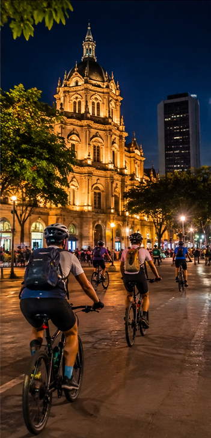
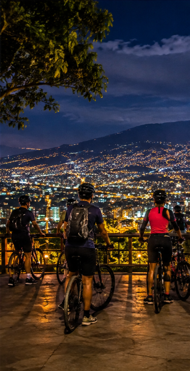
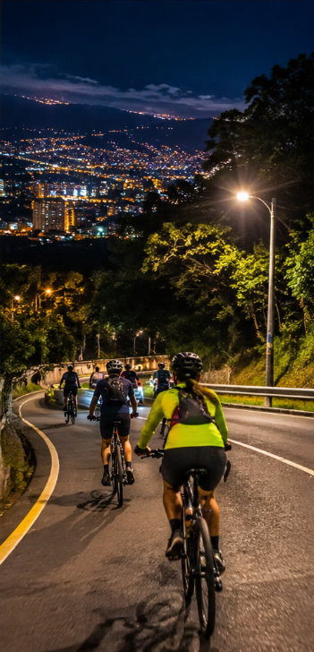

Nuevo · Jueves a sábado
Rueda Nocturna
Descubre Medellín en bici cuando se encienden las luces
3 rutas
Desde $55.000
Botones
Nuestras rutas nocturnas

Fácil
Luces del Centro
-
Distancia
10 km
-
Duración
2 horas
-
Punto de encuentro
Sede de Rueda Libre

Medio
Miradores de la Ciudad
-
Distancia
16 km
-
Duración
3 horas
-
Punto de encuentro
Sede de Rueda Libre

Difícil
Miradores de la Ciudad
-
Distancia
22 km
-
Duración
3,5 horas
-
Punto de encuentro
Sede de Rueda Libre